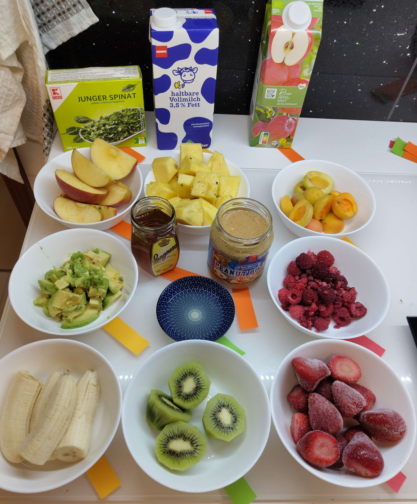
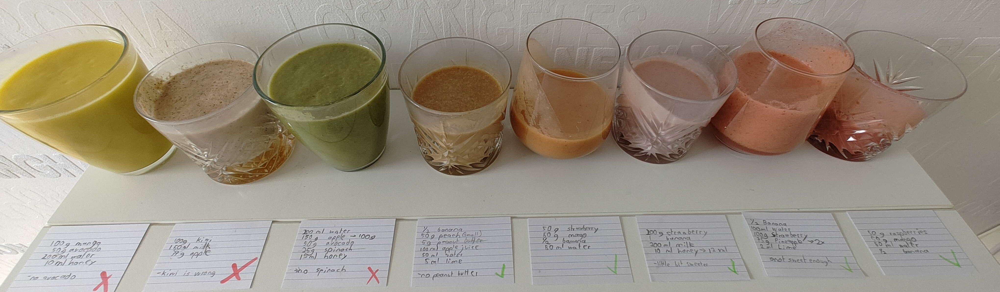

Smoothie

This is my experience trying to create smoothies myself instead of browsing recipies on the internet.
Why did I try to create new smoothies fully from scratch?
Everyone’s taste is different, therefore not all smoothies can be seen as tasty by everyone. There is no perfect combination of healthy fruits, that everyone will like, but this is not my goal. My goal is to create smoothies that I like, find tasty and can drink every day. How hard is it to actually create smoothies that are healthy, easy to make and cheap.
Preparation:
My first step was to buy all the ingredients that I “could” use in a smoothie, e.g. strawberries, pineapple, banana … Then I sorted all those by taste (red - sweet, green - sour, yellow - neutral and orange - other). This step is not necessary, because sweet ingredients can go with other sweet ones just as well as with sour ones.
Experimenting:
Now I combined all sorts of things and tried them in the end. For me personally, sweet fruits combined with other sweet ones and water, was the go-to for every smoothie I enjoyed. On top I found ingredients like peanut butter, avocado, apple and kiwi did not work no matter what I added to them. While experimenting, it is crucial to write down the things, that you used for that mix so that you can replicate it precisely.
Results:
 Overall, I’m happy with my results, because I found 4 solid smoothie reciepes, 1 mediocre and just 3 bad ones.